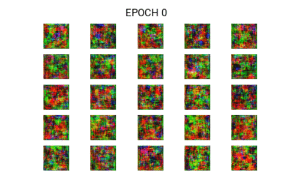

FaceGAN - Random Face Generator
By: Aditya Jain

How it works in Breif?
Here I am leveraging Generative Adversarial Networks (GANs), and more specifically Deep Convolutional Generative Adversarial Networks (DCGANs) to generate new faces which were never seen before.
I have trained a GAN on 100k celebrities image dataset. Here is the training progress.
